사람이 할 일은 한 단계 위로
발표자는 영상 첫머리에 다룰 내용을 화이트보드에 그려 놓고 시작해요. 왼쪽 위부터 에이전트가 사람 일을 대신하는 이야기, 트리거가 에이전트를 켜는 새 방식, 루프와 소프트웨어 팩토리, 24시간 도는 클라우드 에이전트, 12개월 뒤 우리 일의 모습이에요.
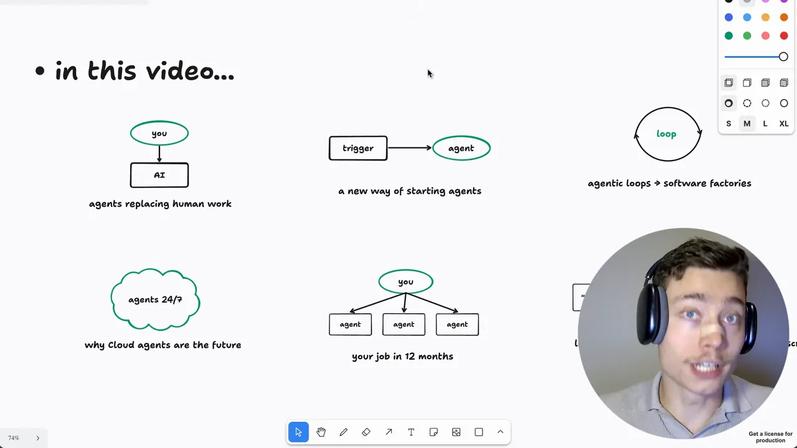
사람이 아직 더 잘하는 것
발표자는 모델이 잘하는 일에 매달리지 말라고 해요. 슬라이드 왼쪽 목록이 사람이 앞서는 영역이에요. 창의성, 직관, 실용 감각, 취향이에요. 실용 감각에는 느낌표를 두 개나 붙였어요. 에이전트는 "한 시간밖에 없으니 세부는 건너뛰자"거나 "테스트로 저장소를 도배하지 말자" 같은 판단을 못 한다는 거예요.
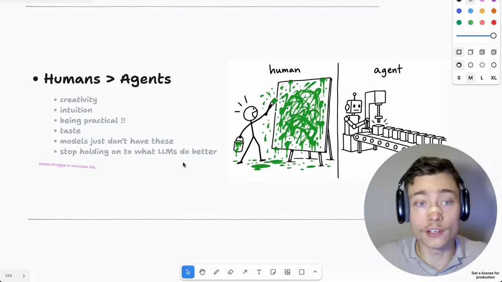
취향은 이렇게 설명해요. 누구나 AI(Artificial Intelligence)로 앱 1만 개, 이미지 수백 장을 만들 수 있어요. 그중 뜨는 건 한두 개뿐이고, 무엇이 좋은지 아는 사람이 이겨요. 이런 감각은 학습 데이터에 글로 남아 있지 않아서 모델이 약하다는 게 발표자의 설명이에요.
과거에도 사람은 적응했어요
미래를 보려면 과거를 보라며 농업을 예로 들어요. 1800년 미국 노동자의 약 75%가 농사를 지었지만 지금은 2% 아래이고, 먹을 건 더 많아요. 아래 그림의 왼쪽이 손과 말로 밭을 가는 모습, 오른쪽이 트랙터 한 대가 같은 밭을 가는 모습이에요.
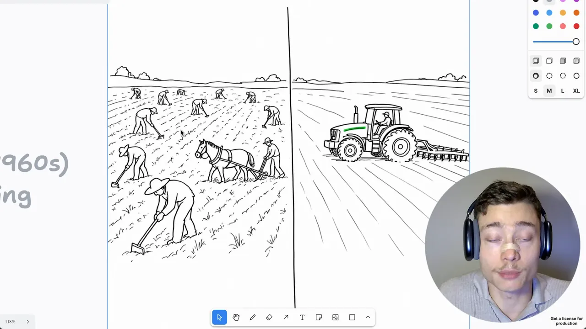
일의 계단
그럼 사람은 무엇을 하게 될까요. 발표자는 일을 네 칸짜리 계단으로 그려요. 맨 아래가 직접 일하기, 그 위가 에이전트 돌리기, 루프 설계, 맨 위가 팩토리 운영이에요. 오른쪽 위로 갈수록 손이 덜 가고, 더 추상적이고 창의적인 일이 돼요.
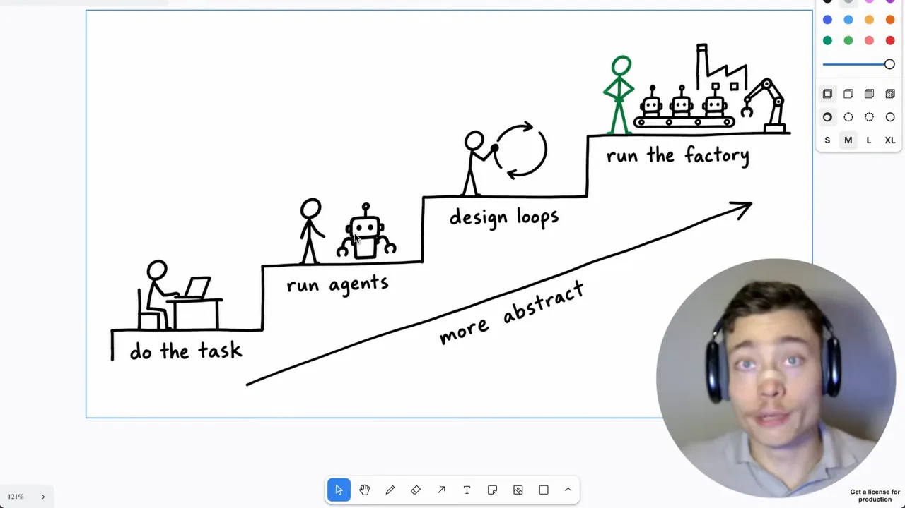
격차도 강조해요. 아래 막대에서 무료 ChatGPT의 지능 점수는 16, Opus 5.5 extra high는 56이에요. 화살표에 3.5배라고 적혀 있어요. 많은 사람이 무료 챗봇과 무료 검색 AI를 쓰는 동안 앞선 사람들은 훨씬 강한 모델을 쓰고 있다는 얘기예요.
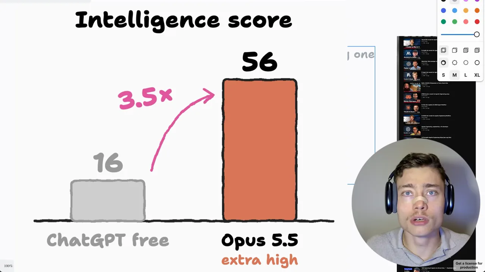
사람이 빠져야 하는 이유
발표자는 회사에 빗대요. 직원 5,000명 회사의 CEO(Chief Executive Officer)가 바닥 청소 시간까지 정할 수는 없어요. 곧 누구나 "5,000명짜리 회사"를 갖게 되고, 그중 대부분은 에이전트일 거라고 해요. 지금은 에이전트가 너무 빨라서, 막힌 걸 하나씩 풀어 주는 방식으로는 다섯 개도 동시에 돌리기 어려워요. 그래서 사람이 루프 안에 있으면 안 되고, 프롬프트 대신 일정·웹훅·장애 같은 트리거가 에이전트를 켜야 해요. 음성 프롬프트도 결국 사람의 주의를 써서 부족하다고 봐요.
슬라이드의 'we will:' 아래 여섯 줄이 앞으로 사람이 할 일이에요. 발표자는 이 목록을 영상 전체의 뼈대로 삼아요.
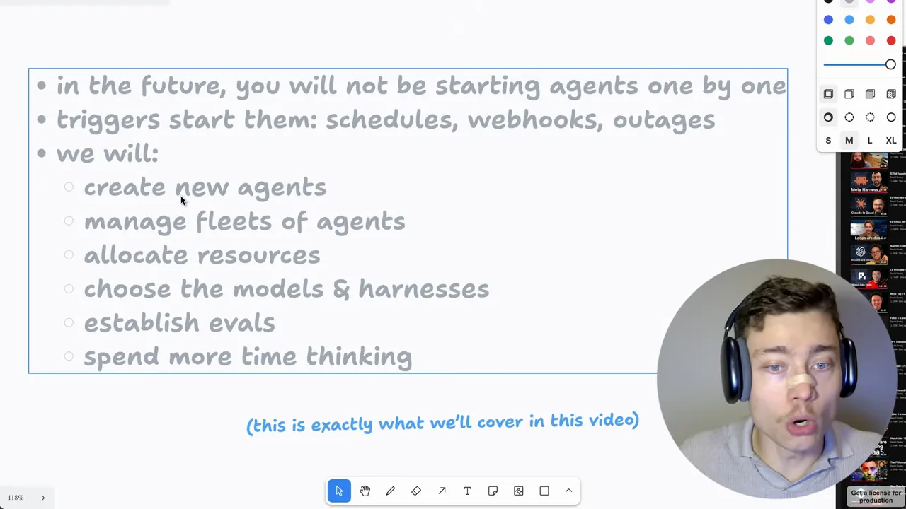
| 앞으로 할 일 | 영상이 든 예 |
|---|---|
| 새 에이전트 만들기 | 특정 일에 맞춘 에이전트, 범용 에이전트 |
| 에이전트 무리 관리 | 마케팅 팀, 제품 팀, 고객 지원 팀을 에이전트로 |
| 자원 나누기 | 월 5만 달러를 토큰, 인건비, 페이스북 광고, 하드웨어에 얼마씩 |
| 모델·하네스 고르기 | 쉬운 일은 싼 모델(DeepSeek V4.1 Flash), 중요한 일은 Opus 5.5 |
| 평가 기준 세우기 | 에이전트가 끝낸 일의 비율, 태운 토큰 수 |
| 더 많이 생각하기 | "무엇을 안 하고 있지? 루프를 어디에 더 만들까?" |
에이전틱 루프: 내 일의 작은 조각부터
발표자는 에이전틱 루프를 어렵게 정의하지 않아요. 나를 일에서 빼 보는 시도라는 거예요. 소프트웨어 팩토리는 이런 루프를 여러 개 엮은 다음 단계예요. 루프에는 승인 단계 같은 곳에 사람이 남아 있을 수 있지만, 팩토리는 스스로 돌아가야 해요.
슬라이드 오른쪽 네 줄이 출발점이에요. 가장 예측 가능한 업무의 1~2%부터 떼어 내라, 매일 하는 일 대부분은 특별하지 않다, 같은 유형의 일을 반복한다, 그러니 Opus 5.5에 넘길 수 있는 일을 찾아라.
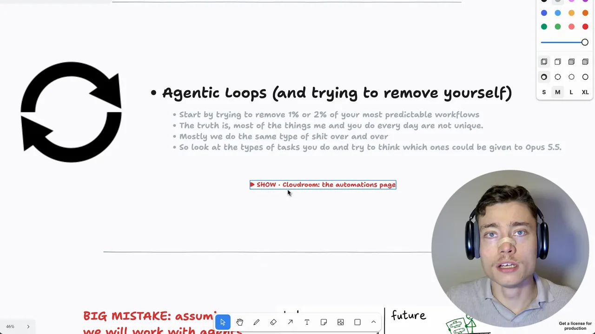
예전에는 이런 반복 업무를 n8n 같은 도구와 평범한 코드로 자동화하려 했어요. 정해진 규칙 밖으로 조금만 벗어나도 막혔죠. 지금은 그 자리에 에이전트를 넣을 수 있어요. 발표자는 이게 가능해진 이유로 지난 1년 사이 모델과 하네스가 함께 좋아진 걸 꼽아요. Claude Code 다음으로 OpenClaw, Hermes Agent, Pi 같은 하네스가 잇달아 나왔고, 대부분 오픈소스라 서로 아이디어를 빌려 가며 빨리 좋아졌다고 해요.
먼저 시간이 어디로 가는지 봐요
무엇을 떼어 낼지 고르려면 시간 기록이 있어야 해요. 발표자는 몇 년째 하루를 15분 단위로 달력에 적어요. 영상에서는 에이전트에게 Composio CLI(Command Line Interface)로 달력·보낸 메일·드라이브를 읽고 최근 14일을 큰 묶음으로 정리하라고 시켜요. 아래가 그 결과예요. 1번 'Building Cloudroom'이 가장 많은 시간을 먹었고, 사용자 온보딩, 출시 전략, 유튜브, 스폰서, 팀·채용, 네트워킹, 관리 업무가 이어져요.
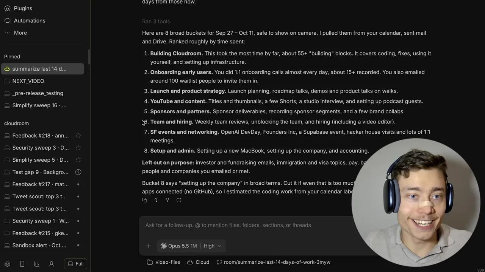
회계 장부를 봐야 어디서 돈이 새는지 아는 것처럼 시간도 마찬가지예요. 발표자는 대부분 사람이 20%라고 생각한 일에 실제로는 60%를 쓴다고 말해요. 회사에서 가장 귀한 자원은 CEO의 시간이고, 1인 사업이라면 내가 CEO예요.
큰 실수: 지금 방식이 계속될 거라는 가정
발표자가 빨간 글씨로 적은 실수는 앞으로도 지금처럼 에이전트와 일할 거라고 가정하는 거예요. 아래 슬라이드의 회색 줄이 그 차이를 정리해요. 지금은 에이전트를 하나씩 켜고 하나씩 막힌 걸 풀어 줘요. 곧 트리거가 에이전트를 켜고, 에이전트는 클라우드에서 24시간 돌아요.
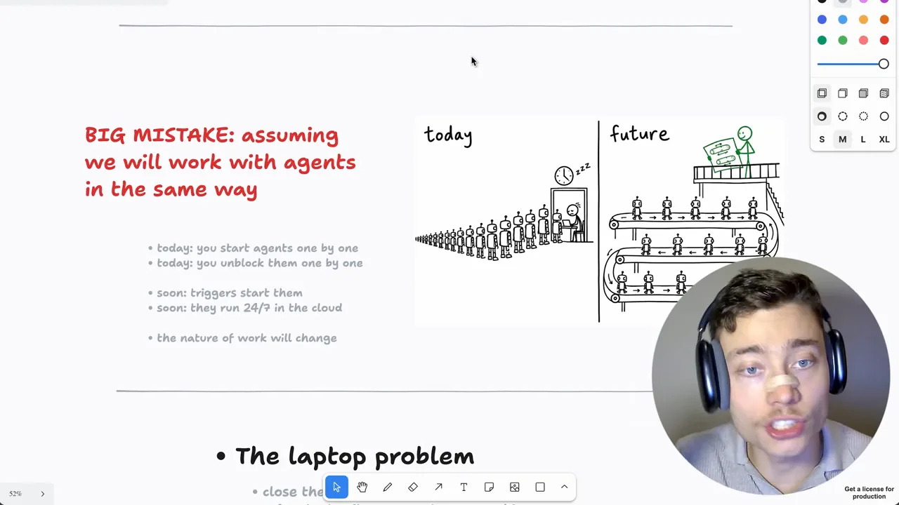
그림을 확대하면 더 분명해요. 왼쪽 'today'에서는 로봇들이 길게 줄을 서서 졸고 있는 사람 하나를 기다려요. 오른쪽 'future'에서는 로봇들이 컨베이어 벨트 위에서 일하고, 사람은 위층에서 설계도를 들고 있어요.
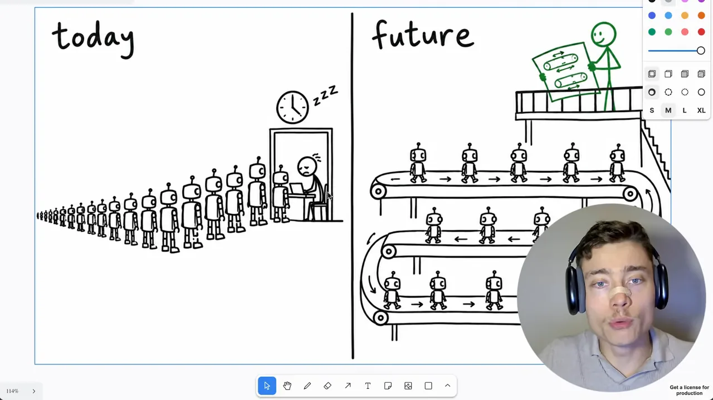
루프의 두 축: 트리거와 실행
사람을 빼려면 두 가지를 정해야 해요. 무엇이 일을 시작시키는지(트리거)와, 깨어난 에이전트가 무엇을 들고 일하는지(실행)예요. 발표자가 말로 든 예를 한 그림에 모았어요.
좋은 작업 단위를 고르는 감각도 여기에 들어가요. 발표자는 12개월 전보다 지금 훨씬 많은 에이전트를 쓰고 있고, 12개월 뒤에는 더 많이 쓸 거라고 말해요. 그 지점에 남보다 빨리 가는 게 경쟁력이라는 거예요.
노트북 한 대의 한계와 클라우드 에이전트
왜 우리는 에이전트를 더 많이 돌리지 못할까요. 발표자가 찾은 첫 답은 '노트북 문제'예요. 회사에 들어갔더니 직원 20명이 노트북 한 대를 같이 쓰라고 하는 셈이라는 거예요. 슬라이드의 네 줄이 그 문제를 정리해요.
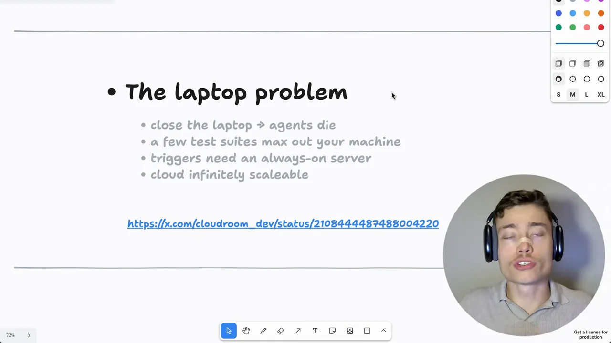
- 노트북을 닫으면 에이전트가 죽어요. 와이파이가 끊기거나 배터리가 떨어져도 마찬가지예요. 에이전트가 사업의 20~60%를 맡게 되면 노트북이 꺼지는 순간 사업이 멈춰요.
- 테스트 몇 개가 머신을 다 잡아먹어요. 에이전트 두어 개가 Docker Desktop을 열고 큰 테스트를 돌리면 팬 소리부터 커져요.
- 항상 켜진 서버가 필요해요. 사람이 아니라 트리거가 에이전트를 켜려면요.
- 늘렸다 줄일 수 있어야 해요. 좋은 Mac Studio나 리눅스 박스를 사도 정해진 개수까지만 돌아요. 일주일만 20% 더 필요하면 박스를 하나 더 사야 해요.
발표자가 만들고 있는 도구 Cloudroom의 데모 게시물이 그 반대 경우를 보여 줘요. 프롬프트 한 줄로 클라우드 서브에이전트 110개를 57초 만에 띄웠어요. Sonnet 에이전트 10개가 각각 Haiku 에이전트 10개를 돌리는 구조예요. 말로는 맨 위에 Opus 관리자를 둔 3단 구조라고 설명해요.
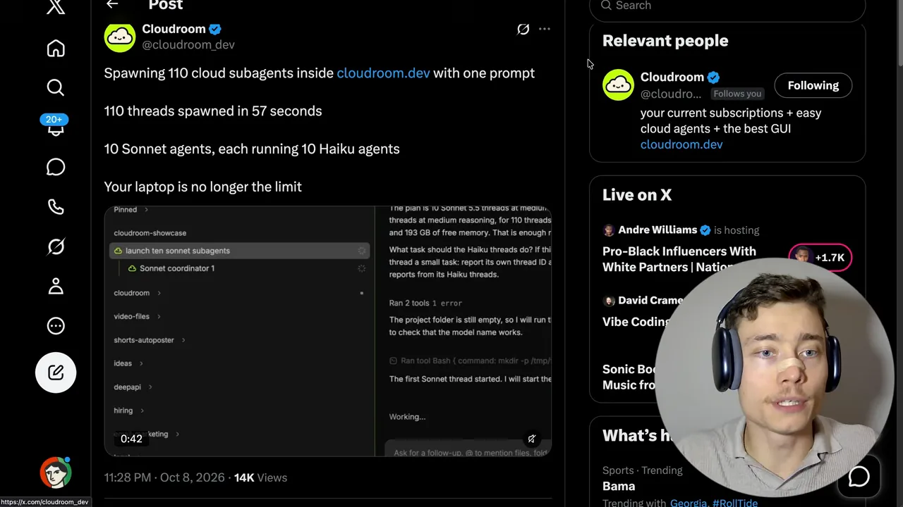
발표자는 노트북 문제를 우회하려고 immortal-agents라는 저장소를 공개한 적도 있어요. 인터넷이 2분 넘게 끊겼다가 돌아오면, 멈춘 에이전트에게 'keep going'을 보내 다시 일하게 하는 도구예요. README의 'What it does' 문단에 그 동작이 적혀 있어요.
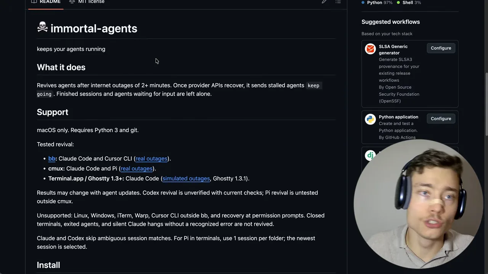
로컬 에이전트와 클라우드 에이전트
차이는 슬라이드 첫 줄에 있어요. 로컬은 내 노트북에서, 클라우드는 서버에서 돌아요. 그 아래 세 줄이 클라우드가 나은 이유예요. 노트북은 CPU·RAM(Random Access Memory)·디스크가 정해져 있고, 컴퓨터 사용 에이전트가 화면을 차지하고, 보안 면에서도 클라우드가 낫다는 거예요.
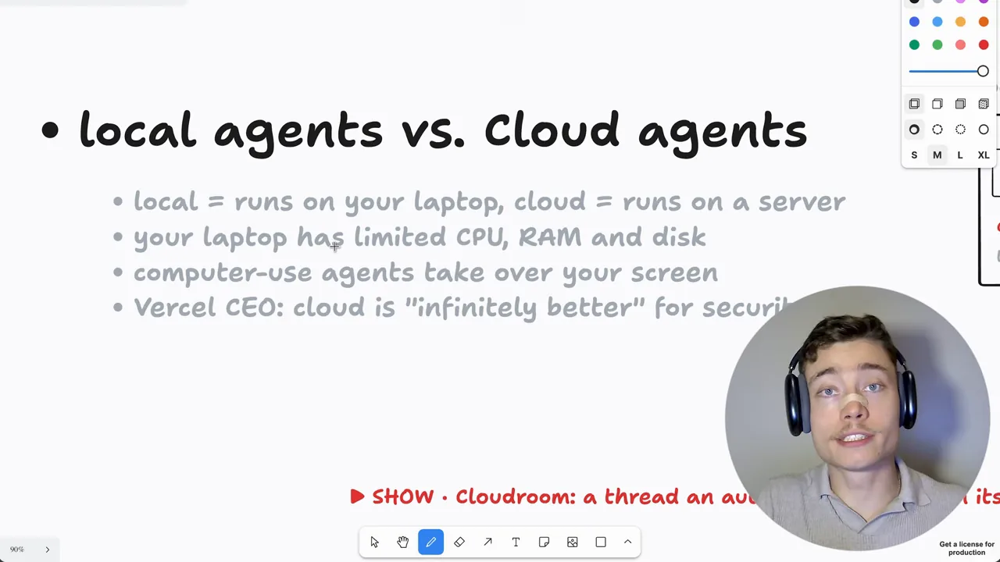
발표자는 흐름의 근거로 Cursor 내부 수치를 들어요. 연초에는 실제 배포까지 간 PR(Pull Request) 중 클라우드 에이전트가 만든 게 10% 정도였는데, 8월에는 60%를 넘었다는 거예요. 앞으로 90%까지 갈 거라고 보고, 개인 폴더 정리처럼 꼭 로컬이어야 하는 일만 남을 거라고 해요.
화면을 뺏는 문제와 보안
컴퓨터 사용 기능은 최근 몇 달 사이 크게 좋아졌어요. 에이전트가 화면을 잡고 클릭해서 AWS(Amazon Web Services)나 Google Cloud 콘솔 같은 복잡한 화면도 대신 설정해요. 문제는 내가 같은 컴퓨터로 일하는 중에 팝업을 띄우고 브라우저 탭을 연다는 거예요. 에이전트가 20개를 넘으면 함께 쓰기 어려워요.
보안은 발표자가 화이트보드에 직접 그려 설명해요. 노트북 하나와, 클라우드에 흩어진 샌드박스 여러 개를 놓고 비교해요. 아래는 그 그림을 정리한 거예요.
발표자는 최근 인터뷰한 Vercel CEO Guillermo Rauch가 "보안에는 클라우드가 무한히 낫다"고 말했다는 걸 근거로 들어요.
자동화를 회사 부서처럼 나누기
발표자는 앞에서 사이드바에 스레드가 저절로 생기는 장면을 보여 줬어요. 그게 아래 자동화 목록에서 시작된 거예요. 이름 옆 괄호가 주기이고, 둘째 줄에 실제 일정이 적혀 있어요. 화면에는 31개 중 7개가 보여요.
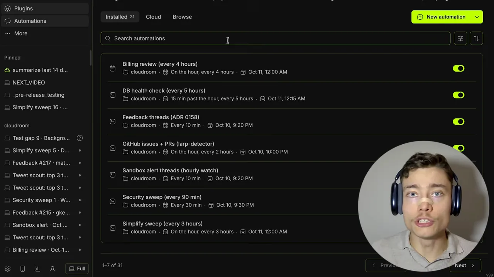
| 자동화 | 주기 (화면 기준) | 하는 일 (영상 설명) |
|---|---|---|
| Billing review | 4시간마다 | 결제 코드를 훑어 새 버그나 지난번에 놓친 문제를 찾아요 |
| DB(Database) health check | 5시간마다 | 동시 연결 수, CPU, 메모리가 버티는지 봐요 |
| Feedback threads | 10분마다 | 사용자가 남긴 버그·제안을 조사해요 |
| GitHub issues + PRs | 2시간마다 | 공개 저장소의 이슈와 PR을 정리해요 |
| Sandbox alert threads | 10분마다 | 샌드박스 문제와 한도 초과를 살펴요 |
| Security sweep | 화면 30분 · 이름 90분 | 코드베이스에 침투 테스트를 해요 |
| Simplify sweep | 3시간마다 | 불필요한 복잡함과 안 쓰는 코드를 찾아요 |
Security sweep는 이름에 90분, 일정 줄에 30분이라고 적혀 있어요. 화면 그대로 옮겼어요.
회사가 10배 크다면
발표자의 요점은 목록 자체가 아니라 나누는 방식이에요. 직원 5,000명짜리 소프트웨어 회사라면 데이터베이스 팀, 결제 팀, 보안·인증 팀이 따로 있을 거예요. 내 일도 회사가 10배 크면 어떤 팀으로 나뉠지 그려 보고, 팀마다 루프를 하나씩 만들어 보라는 거예요.
가장 마음에 든다는 건 피드백 자동화예요. 사용자가 앱 안에서 "David에게 이거 알려 줘"라고만 하면 돼요. 흐름은 아래와 같아요.
flowchart LR
A["10분마다 실행"] --> B{"Supabase 테이블에
새 항목?"}
B -->|없음| Z["아무 일도 안 해요"]
B -->|있음| C["Opus 5.5 에이전트가 조사"]
C --> D{"고칠 만한가?"}
D -->|사소함| E["스스로 보관 처리"]
D -->|중요함| F["쉬운 영어 몇 문장으로
설명하고 기다림"]
발표자는 이 방식 덕분에 작은 팀으로도 개발자 50~200명인 회사보다 많은 일을 한다고 말해요. 보안 점검은 선택이 아니라고도 해요. 내가 토큰을 써서 내 코드를 공격해 보지 않으면 남이 대신 해 볼 거라는 거예요. 지금 할지, 모두에게 당연해진 6~12개월 뒤에 할지만 남았다고 봐요.
클라우드 에이전트가 어려운 이유
그런데 왜 아직 다들 클라우드 에이전트를 안 쓸까요. 발표자는 좋은 제품이 대부분 대기업의 비공개 제품(Codex, Cursor, Claude, Devin)이고, 데이터를 내 뜻대로 가져가거나 아무 모델·구독이나 쓸 수 있는 선택지가 없었다고 봐요. 슬라이드의 네 줄이 넘어야 할 문턱이에요.
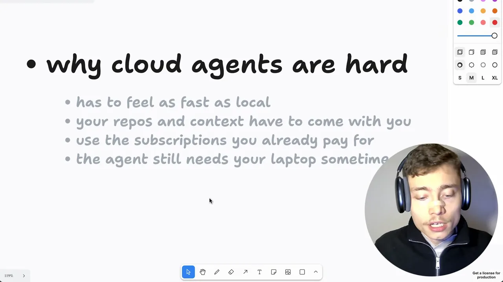
- 로컬만큼 빨라야 해요. 조금이라도 느리면 사람들이 쓰지 않아요.
- 저장소와 맥락이 따라와야 해요. 스킬까지 포함해서요.
- 이미 내는 구독을 써야 해요. 자기 구독과 하네스만 강제하는 서비스는 부담이에요.
- 가끔은 노트북도 필요해요. 에이전트가 내 컴퓨터에 닿아야 하는 일이 남아 있어요.
에이전트 여러 개를 한 번에, 그리고 사람이라는 병목
이 구간은 데모예요. 발표자는 Cloudroom에서 "서브에이전트 15개를 띄워 이 코드베이스의 서로 다른 부분을 분석하고, 각각 Sonnet 5.5 extra high로 돌려"라고 말해요. 주 에이전트(Opus)가 1초도 안 돼 떴고, 곧 저장소를 15구역으로 나눠요.
아래 화면이 주 에이전트의 계획이에요. 'What each one does' 아래 세 줄이 규칙이에요. 자기 구역에서 작고 진짜인 버그만 찾고, 코드는 읽기만 하고, 버그는 많아야 10개를 파일·줄·실패 방식·수정안과 함께 보고해요. 왼쪽 사이드바에는 'bugs: …' 서브에이전트 스레드가 줄줄이 생겨요.
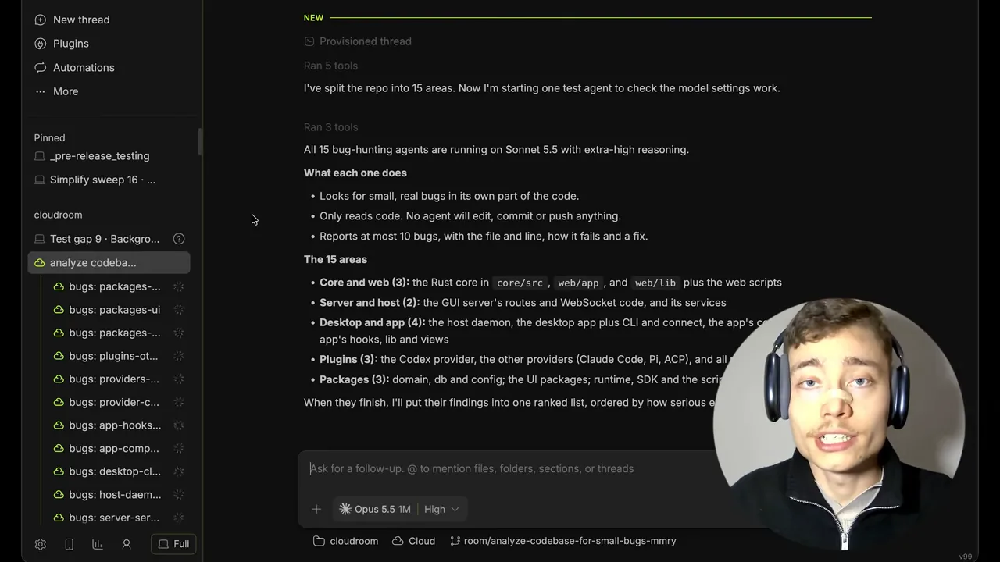
이어서 "전부 멈춰", "전부 보관하고 Codex 하네스에 GPT-6.1 Sol 모델로 25개를 다시 띄워"라고 말해요. 하네스와 모델을 섞을 수 있다는 걸 보여 주려는 거예요. Opus를 조정자로, Sol을 작업자로 둘 수도 있고, 반대로도 돼요. 발표자는 각 에이전트가 자기 샌드박스에서 돌아서 CPU·RAM·디스크를 서로 뺏지 않는다는 점을 강조해요.
내가 병목이에요
발표자는 다시 슬라이드로 돌아와요. 제목은 'you are the bottleneck'이고 그 아래 네 줄이에요. Opus 5.5는 이미 AGI(Artificial General Intelligence) 수준이다, 구독에는 내가 쓰는 것보다 많은 토큰이 들어 있다, 그 토큰을 버리지 마라, Opus를 또 어디에 쓸 수 있을까. 오른쪽에서 셋째 줄로 마케팅과 제품 가지가 뻗어 나와요.
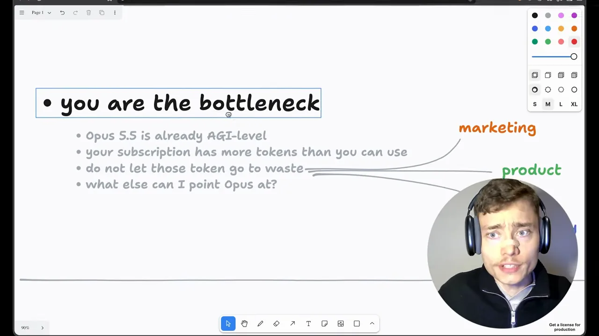
직원 10~30명으로 키우려면 CEO가 일에서 손을 떼야 하듯, 나도 에이전트 군단의 CEO로서 손을 떼야 한다는 거예요. 주간 한도의 절반도 못 쓰고 남기는 경우가 많은데, 구독을 낮추는 건 나쁜 답이라고 해요. 토큰을 구독료보다 많은 돈으로 바꾸는 능력이 앞으로의 핵심 기술이라는 거예요.
두 모델이 동의해야 통과해요
발표자가 '좀 더 고급'이라고 소개하는 자동화가 테스트 공백 찾기예요. 에이전트는 그냥 두면 단위 테스트, 컴포넌트 테스트, 통합 테스트로 코드베이스를 도배해요. 그래서 이 자동화는 정말 필요한 테스트만 찾게 짜여 있어요. 아래 화면 위쪽 설정 줄에는 'Every 30 min'이라고 적혀 있어요. 스크립트 주석을 보면 30분마다 깨어나서, 마지막 사냥이 5시간 25분 넘게 지났을 때만 새로 시작해요. 그래서 실제로는 5.5시간마다 돌아요.
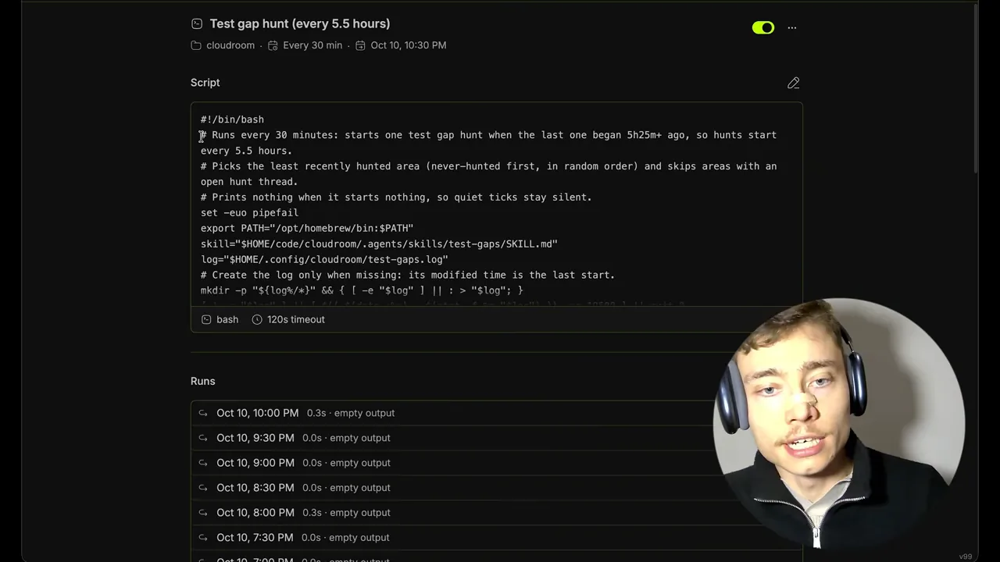
flowchart LR A["Opus가 테스트 공백 발견"] --> B["GPT-6.1 Sol extra high가
'필요 없다'는 쪽에서 반박"] B --> C{"두 모델 모두
좋은 테스트라고 동의?"} C -->|아니요| D["버려요"] C -->|예| E["사람에게 승인 요청"]
마지막 조언은 내 사업이 100배 크다면 어떤 부서가 있을지 조사해 보라는 거예요. 마케팅 대행사든 부동산 중개든 비슷한 규모의 회사가 실제로 있으니까요. 그 부서마다 자동화를 만들고, 어떤 건 트리거로, 어떤 건 10분이나 4시간마다 돌려요. 쓸모없는 건 지우면 돼요. 시도하지 않으면 좋은 것도 못 찾는다는 게 발표자의 말이에요.
토큰 값과 모델 조합
추론 비용은 루프와 팩토리를 돌릴 때 가장 큰 변수예요. 발표자는 자기 경험부터 꺼내요. 아래 게시물에서 그는 Codex 200달러 요금제 6개에 월 1,200달러를 썼다가, Opus 5.5가 나온 뒤 Claude 200달러 구독 하나가 같은 양을 처리한다고 썼어요. 안쪽에 인용된 이전 게시물에는 "Claude Code 200달러 구독이 Codex 200달러보다 16~24배 많이 쓸 수 있다"는 계산이 있어요.
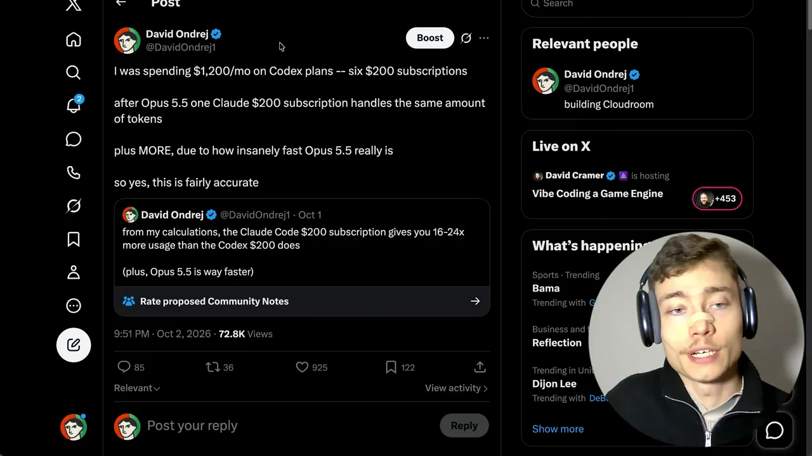
근거로 SemiAnalysis 차트를 보여 줘요. 요금제마다 한 달 사용 한도를 API(Application Programming Interface) 정가로 환산한 가치예요. 초록 막대가 OpenAI GPT-6.1 Sol, 주황 막대가 Anthropic Claude Opus 5.5예요. 막대 옆의 작은 'x' 숫자는 요금 대비 몇 배인지예요.
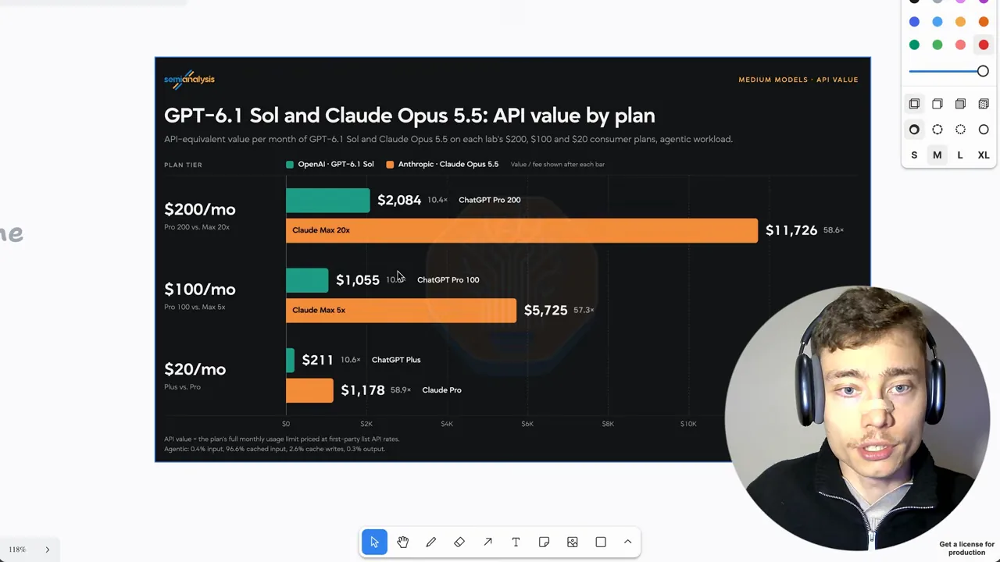
발표자는 이 차트가 "Claude 쪽이 10.6배 더 가치 있다"는 걸 보여 준다고 말해요. 그런데 차트의 10.6×는 ChatGPT Plus가 20달러 요금의 몇 배 가치인지를 뜻하는 숫자예요. 같은 요금대끼리 나누면 아래처럼 약 5.4~5.6배예요. 여전히 큰 차이지만, 영상이 말한 배수보다는 작아요.
| 요금대 | ChatGPT (GPT-6.1 Sol) | Claude (Opus 5.5) | Claude ÷ ChatGPT |
|---|---|---|---|
| 월 200달러 | 2,084달러 (10.4×) | 11,726달러 (58.6×) | 약 5.6배 |
| 월 100달러 | 1,055달러 | 5,725달러 (57.3×) | 약 5.4배 |
| 월 20달러 | 211달러 (10.6×) | 1,178달러 (58.9×) | 약 5.6배 |
발표자는 OpenAI가 DevDay 직전에 Codex 200달러 요금제 사용량을 절반으로 줄이고 500달러 요금제를 냈다고도 말해요. 지금은 Claude Code 구독 두 개를 쓰고 있고, 둘째 구독은 에이전틱 루프를 더 돌리려고 샀다고 해요. 다음 큰 모델이 2~3주 안에 또 나올 수 있으니 이 판단은 금방 바뀔 수 있다고 스스로 단서를 달아요.
원칙 세 가지
슬라이드로 정리하면 이래요. Opus 5.5가 최고다, GPT(Generative Pre-trained Transformer) 모델은 리뷰에만 쓴다, API 가격은 무슨 일이 있어도 피한다. 둘째 줄의 6× 아래에 Claude Code 구독 하나가 같은 양을 처리한다는 설명이 붙어 있어요.
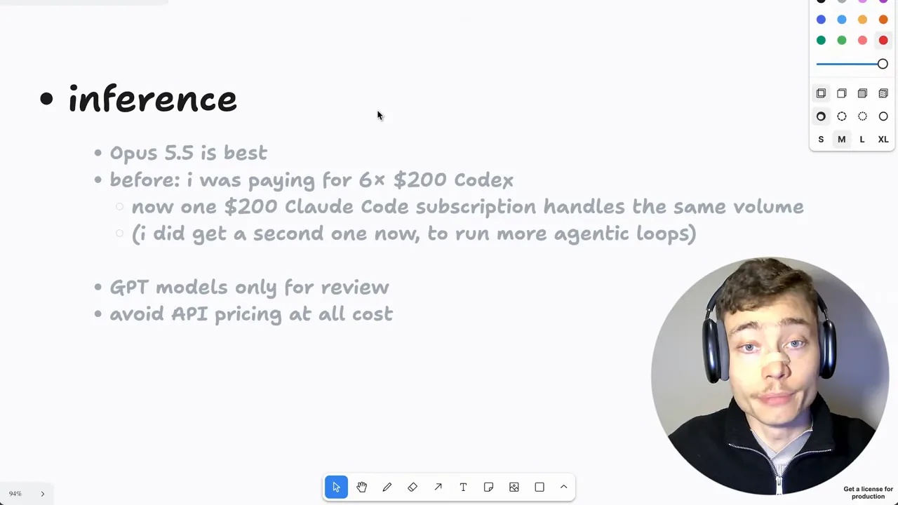
리뷰는 항상 다른 회사 모델로 해요. 발표자는 지금 최전선 회사를 OpenAI와 Anthropic 둘로 봐요. GPT로 만든 건 Opus로, Opus로 만든 건 GPT로 검토해야 서로 다른 관점에서 빈틈을 본다는 거예요. 그의 스레드 98%는 Opus가 주 모델이고, 중요한 변경이면 GPT-6.1 Sol이나 Astra, 때로는 둘 다 리뷰어로 붙여요. 그런 다음 Opus에게 "이게 맞는 지적이야, 과한 생각이야?"라고 물어요.
아래는 코드 단순화 자동화가 16번째로 돌았을 때의 결과예요. 이번에는 Sol 모델이 Max 설정으로 4분 12초 일했어요. 굵은 글씨가 찾은 정리 대상이에요. 안 쓰는 Computer Use SDK(Software Development Kit) 복사본 두 벌로, 합쳐서 23,944줄(약 1MB)이에요.
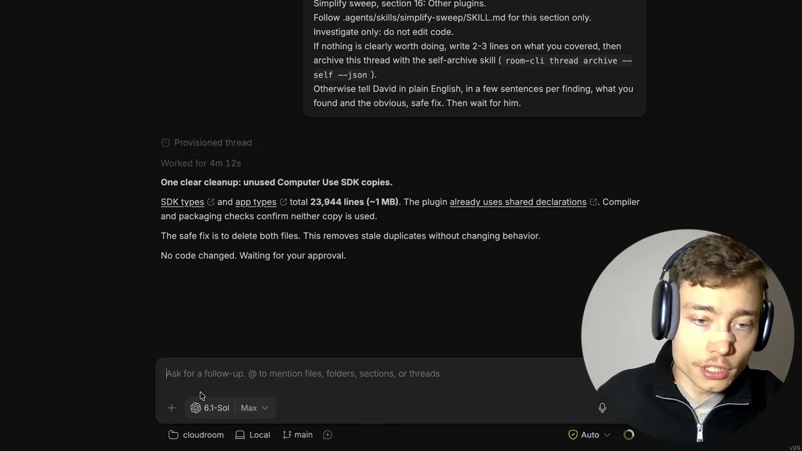
트리거, 스킬, 시퀀스, 그리고 팩토리
루프의 앞쪽 절반, 트리거부터 정리해요. 아래 화면 가운데 타원이 에이전트이고, 다섯 방향에서 화살표가 들어와요. 일정, 웹훅, 장애, 피드백, 다른 에이전트예요. 왼쪽 목록에는 선제적 버그 찾기가 하나 더 있어요.
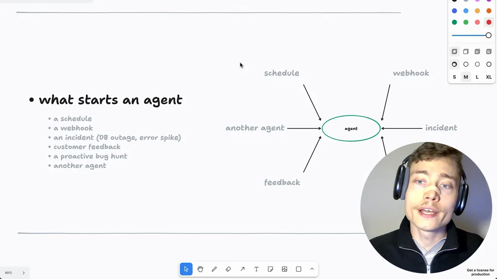
- 일정 — 15분마다, 5시간마다, 하루 한 번.
- 웹훅 — 가장 유연한 트리거라고 해요.
- 장애 — DB 중단, 에러 급증 같은 사건.
- 고객 피드백 — 고객이 많을수록 늘어나요.
- 선제적 버그 찾기 — 일정으로 돌릴 수도 있어요.
- 다른 에이전트 — 발표자가 가장 앞선 영역으로 꼽아요.
마지막 칸이 왜 중요할까요. 발표자는 오픈소스로 공개한 'director'라는 관리자 에이전트를 소개해요. 내 프롬프트 스타일과 판단 방식을 배워서 다른 에이전트들을 관리해요. 좋은 스킬, 지식, 규칙을 Opus 같은 강한 모델에게 가르치면, 막힌 에이전트를 생각보다 효율적으로 풀어 줄 거라고 봐요.
프롬프트에서 스킬로
뒤쪽 절반은 실행이에요. 가장 단순한 단계가 프롬프트 템플릿이에요. 발표자는 Raycast 스니펫에 자주 쓰는 문장을 저장해 두고 단축키로 불러요. 아래 화면이 그중 하나예요. '장황하게 쓰지 마', '읽기 좋은 마크다운으로', '이모지 없이 짧은 대화체로' 같은 지시예요.
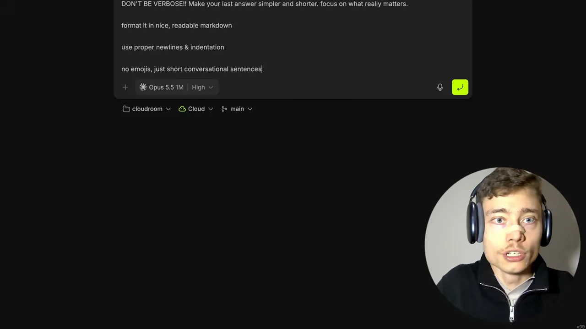
그다음이 스킬이에요. 슬라이드 왼쪽 네 줄이 순서를 말해요. 반복하는 걸 알아채고, 프롬프트 템플릿이나 스니펫으로 만들고, 에이전트가 명령 하나로 돌리는 스킬로 바꿔요. 아래 그림은 '같은 일 ×100'을 프롬프트로 만들고 다시 스킬로 만드는 흐름이고, 밑에 '한 번 쓰고 계속 돌린다'고 적혀 있어요.
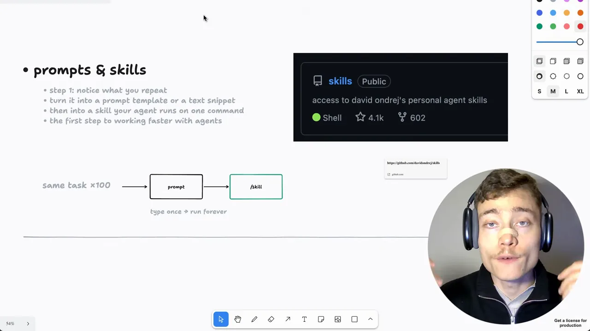
발표자는 스킬을 회사의 표준 작업 절차(SOP(Standard Operating Procedure))에 빗대요. 반대 회사 모델로 검토하는 리뷰 스킬, 배포 스킬, 컴퓨터 사용 스킬처럼 자주 반복하는 절차를 스킬로 만들어 둔대요. 다만 스킬도 사람이 불러야 돌아가요. 방향은 맞지만 사람을 아직 다 빼지는 못했다는 거예요.
그다음은 시퀀스
발표자의 예측은 스킬 다음에 '시퀀스'가 온다는 거예요. 몇 달 에이전트를 쓰면 세션 기록이 수천 개 쌓여요. 그걸 보면 "이 상황에서 David는 이 세 스킬을 98% 확률로 이어서 쓴다" 같은 패턴이 보인다는 거예요. 그 묶음이 시퀀스예요. 사람이 여전히 조금은 끼지만, 앞으로 6개월의 큰 흐름이 될 거라고 봐요.
루프와 팩토리의 차이
마지막으로 둘을 구분해요. 슬라이드 오른쪽 위 원이 루프예요. 트리거 → 에이전트 작업 → 확인 → 반복이에요. 그 아래 줄이 팩토리이고, 신호 → 코드 → 테스트 → 리뷰 → 배포 → 모니터링 칸이 이어진 뒤 초록 화살표가 다시 '신호'로 돌아와요. 위에 '× many'라고 적혀 있어요. 루프 여러 개가 엮였다는 뜻이에요.
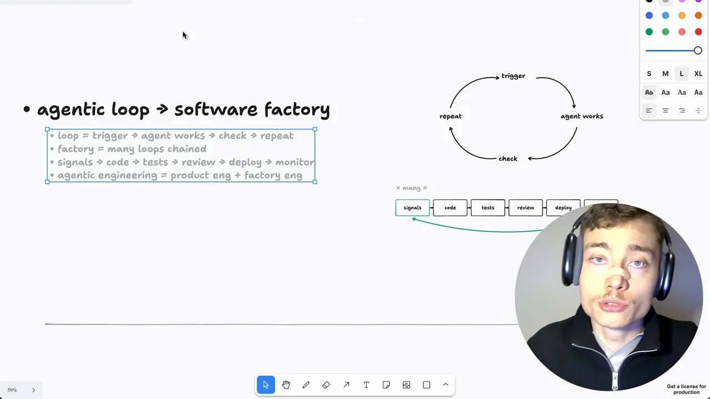
발표자는 자기 것을 '작은 소프트웨어 팩토리'라고만 불러요. 아직 초기라서 최고의 팩토리라고 주장하지 않겠다는 거예요. 루프 하나가 아니라 결제, 보안, 단순화처럼 소프트웨어 일의 여러 갈래에 루프가 하나씩 붙어 함께 돌아가는 상태라는 뜻이에요.
말로 자동화 하나 만들기
이제 실제로 하나 만들어 봐요. 슬라이드 제목은 '쉬운 영어로 자동화 만들기'예요. 원하는 걸 에이전트에게 말하면 에이전트가 자동화를 만들어 줘요. 셋째 줄은 손으로 폼을 채우는 건 단순 노동이라는 말이에요.
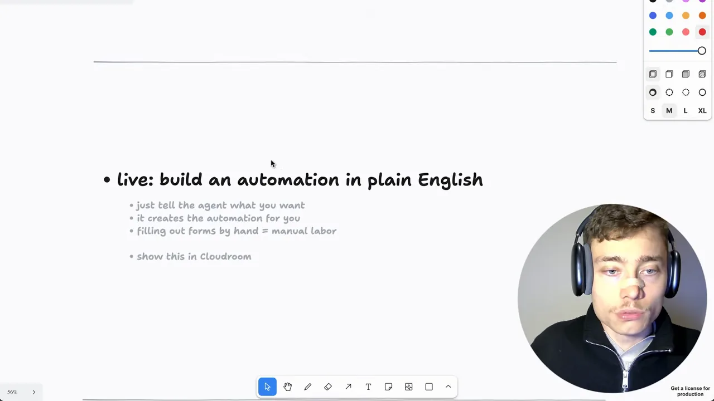
발표자는 이번엔 클라우드가 아니라 로컬 스레드에서 Opus 5.5 high로 음성 프롬프트를 넣어요. 1분이 안 되는 말이 아래 화면 위쪽 문단이에요. 요지는 이래요. 2시간마다 Opus 5.5 extra high 스레드를 띄워 /docs/adr의 결정 기록을 읽고 제품 개선점 하나를 찾게 해요. 아이디어가 나오면 GPT-6.1 extra high 리뷰어 서브에이전트가 '왜 만들면 안 되는지'를 따져요. 주 에이전트가 1원리로 다시 생각해 리뷰어에 동의하면 둘 다 보관하고, 반대하면 David를 기다려요.
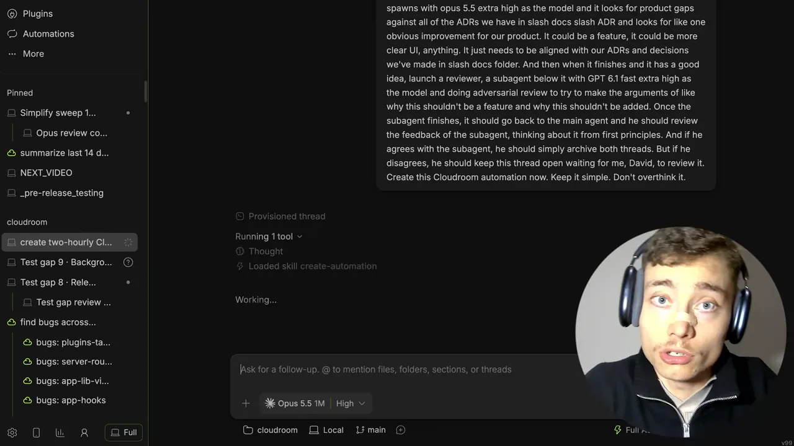
에이전트가 만든 결과를 정리한 화면이에요. 'Each run' 아래 네 단계가 말로 한 요구를 그대로 옮겼어요. 주 에이전트는 코드를 고치거나 커밋·푸시할 수 없게 묶였고, 이미 열린 'Product gap' 스레드에 나온 아이디어는 건너뛰어요. 리뷰어는 GPT-6.1-Sol extra high, fast 티어로 정해졌어요.
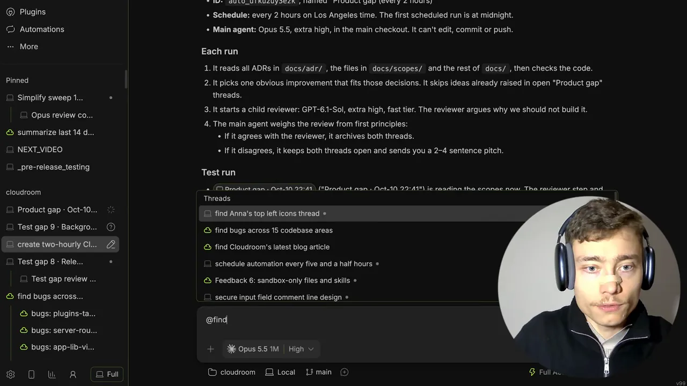
flowchart TD T["2시간마다"] --> A["Opus 5.5 · docs/adr 읽고
개선점 하나 고르기"] A --> R["GPT-6.1 Sol 리뷰어 · 만들면 안 되는 이유"] R --> J{"주 에이전트가 1원리로 판단
리뷰어에 동의?"} J -->|동의| X["두 스레드 모두 보관"] J -->|반대| H["열어 두고 David에게 2~4문장 제안"]
발표자는 새 자동화가 처음 몇 번은 손봐야 쓸 만해진다고 말해요. 토큰만 태우거나 쓸모없는 결과를 쌓으면 안 되니까요. 마크다운 파일 50만 개를 자랑하는 사람 얘기도 꺼내요. 싼 모델로 얼마든 만들 수 있는 숫자라서 아무도 신경 쓰지 않는다는 거예요. 큰 제품 결정과 UI(User Interface)·UX(User Experience)는 사람이 하고, 백엔드 버그·DB 최적화·속도 개선은 Opus가 더 잘하니 넘기라는 게 기준이에요.
로컬과 클라우드, 같은 질문
데모 중간에 "지금 어떤 머신에 있어?"를 로컬과 클라우드 스레드에 똑같이 물어요. 로컬은 128GB 램의 MacBook Pro라고 답해요. 클라우드 쪽 답이 아래 화면이에요. Cloudroom 클라우드 샌드박스이고, AWS 위의 컨테이너이고 운영체제는 Debian 12라고 나와요. 발표자는 클라우드 답도 로컬만큼 빨리 왔다는 걸 보여 주려고 해요.
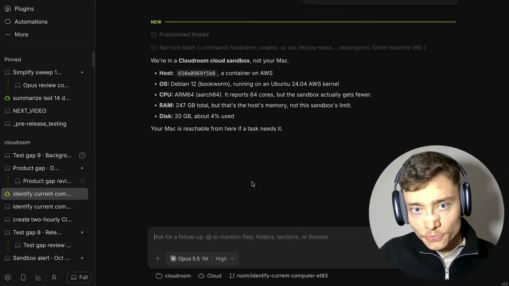
그사이 자동화 목록에 'Product gap (every 2 hours)'가 새로 생겼어요. 개수도 31개에서 32개로 늘었어요. 스위치 하나로 켜고 끌 수 있어요.
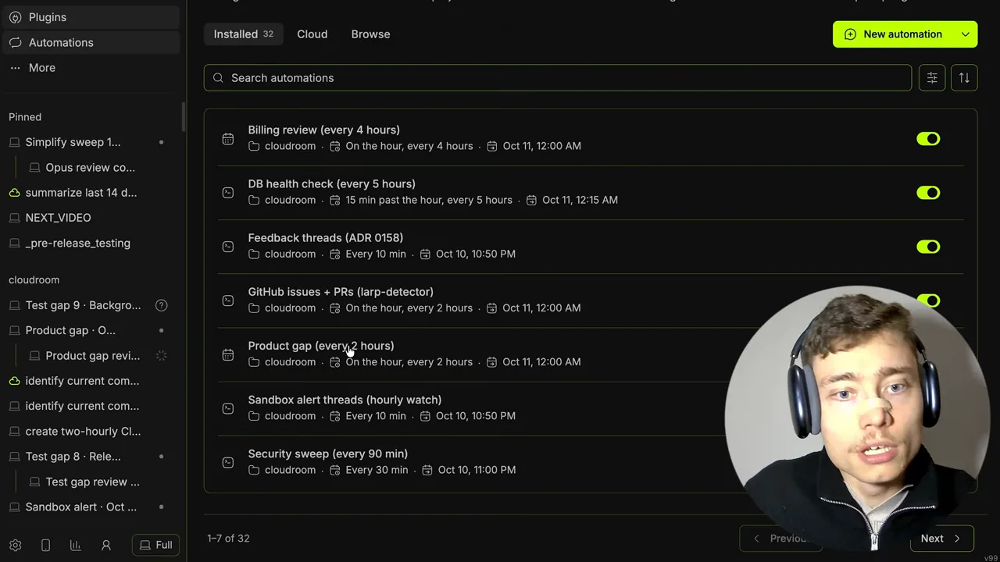
벌어지는 격차와 생각하는 시간
마무리 전에 발표자는 'AI가 모두를 함께 끌어올린다'는 말이 거짓이라고 단언해요. 아래 슬라이드의 곡선이 그 주장이에요. 'locked in'인 사람의 선은 가파르게 올라가고, 나머지 사람의 선은 거의 평평해요.
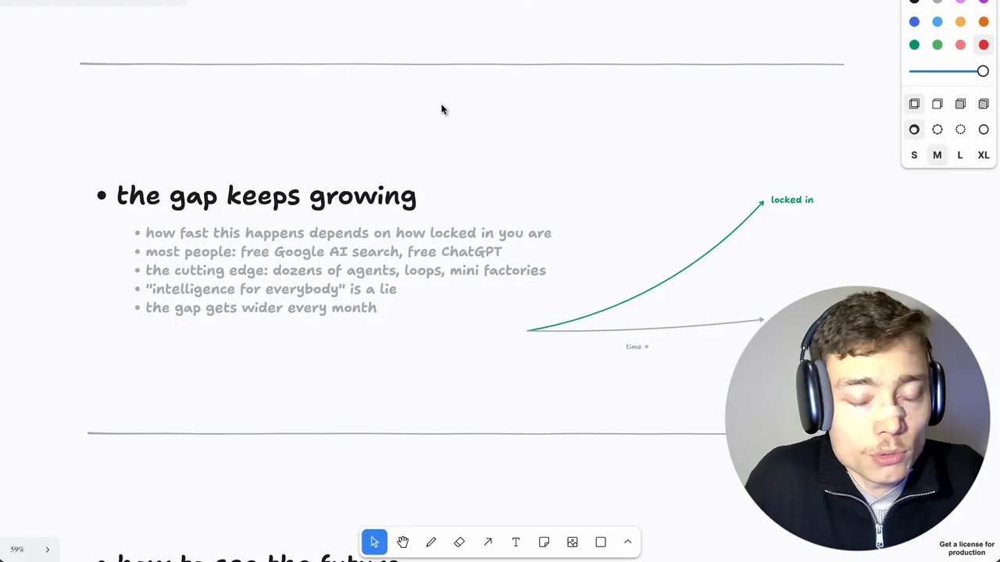
샌프란시스코에서 만난 사람들도 같은 생각이었다고 해요. 에이전트 50~200개를 쓸모 있게 돌릴 줄 아는 사람과 길거리의 평균적인 사람은 비교가 안 된다는 거예요. 큰 회사 CEO들이 이렇게 말하지 않는 건 방송에서 하기엔 나쁜 말이라서라고 봐요. 발표자는 최전선에 있지 않은 대가가 지금처럼 컸던 적이 없다고 말해요.
미래를 보는 방법
그럼 미래는 어떻게 읽을까요. 발표자 팀은 한 시간 동안 한 주제를 놓고 소리 내어 추론해요. 휴대폰도 컴퓨터도 없이요. 슬라이드 오른쪽 그림처럼 사람 행동, 시장 역학, 무엇이 싸지는지 세 갈래를 모아 '미래'를 추론해요.
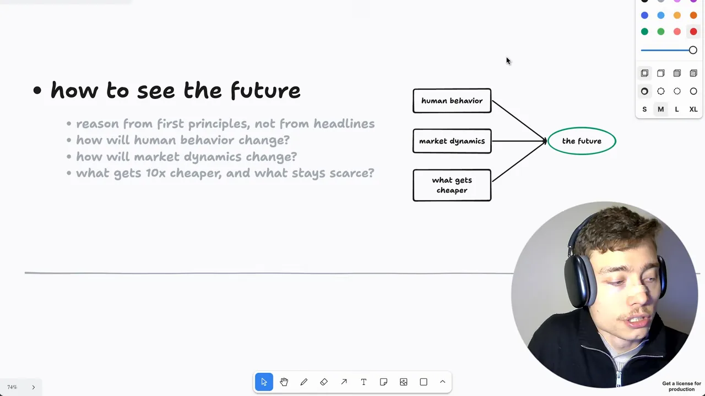
- 사람들의 행동은 어떻게 바뀔까요?
- 시장 역학은 어떻게 바뀔까요?
- 무엇이 10배 싸지고, 무엇이 여전히 귀할까요?
- 이 일이 생기면 2차, 3차로 무엇이 따라올까요?
예로 든 주제는 "이 회사는 왜 크고 있지?", "값싼 판단 모델이 나오면 무엇이 달라지지?" 같은 거예요. 60~90분을 한 방향으로 이야기하고, 아이디어가 나올 때까지 자리를 뜨지 않아요. 처음 5~10분은 막히고 별것 없지만 그 뒤로 생각이 나온다고 해요. 이걸 한두 달 매일 하면 AI 업계 사람 대부분보다 미래를 잘 보게 된다고 말해요. 발표자는 자신도 이렇게 추론해서 '클라우드 에이전트는 피할 수 없다'는 결론에 이르렀다고 해요. 모델은 이미 에이전트 수천 개를 돌릴 만큼 강한데, 우리가 그렇게 못 하고 있으니 병목이 어디인지 찾은 거예요.
마지막으로 Joshua Reynolds의 말을 띄워요.
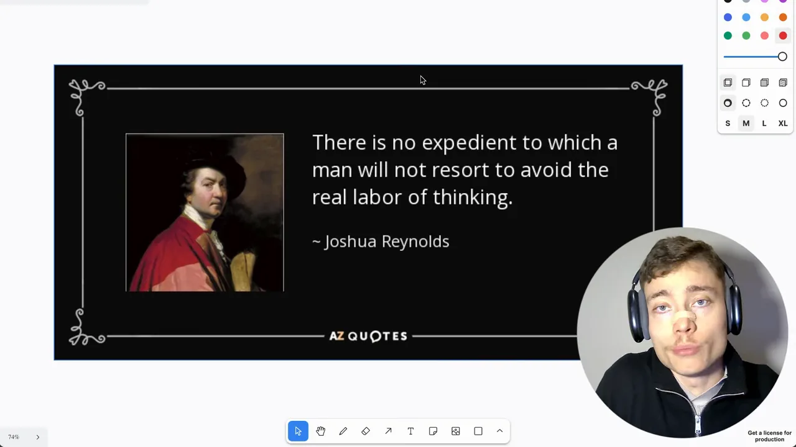
There is no expedient to which a man will not resort to avoid the real labor of thinking.
사람은 생각이라는 진짜 노동을 피하려고 온갖 수단을 다 써요.
— 영상 59:09
발표자는 이 말을 이렇게 풀어요. 사람들은 더 나은 직업이나 일할 업계를 앉아서 고민하는 대신, 40년 동안 하루 10시간씩 다른 일을 하는 쪽을 택하기도 해요. 앞으로의 진짜 노동은 1원리에서 미래를 추론하는 일이라는 거예요.